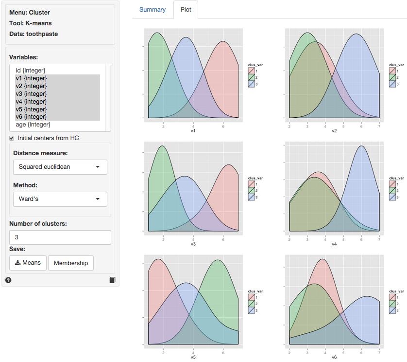
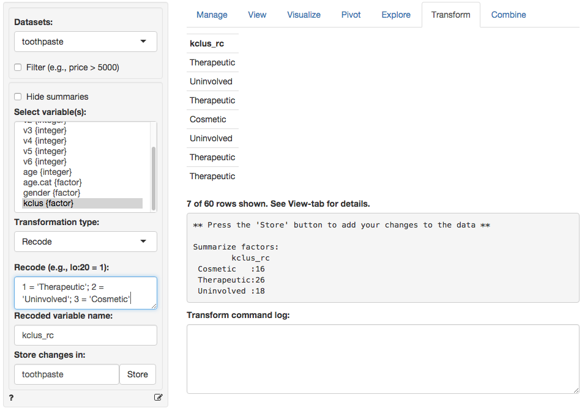
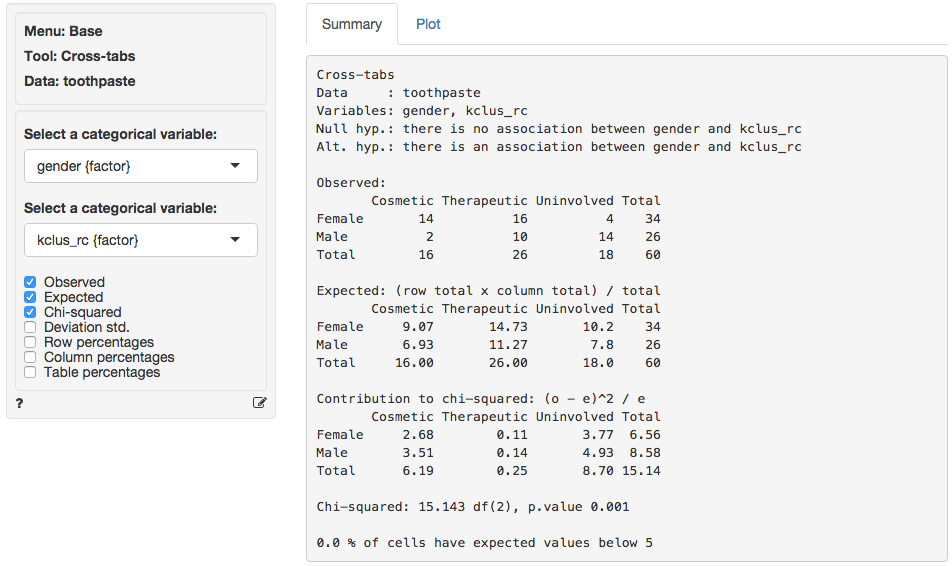
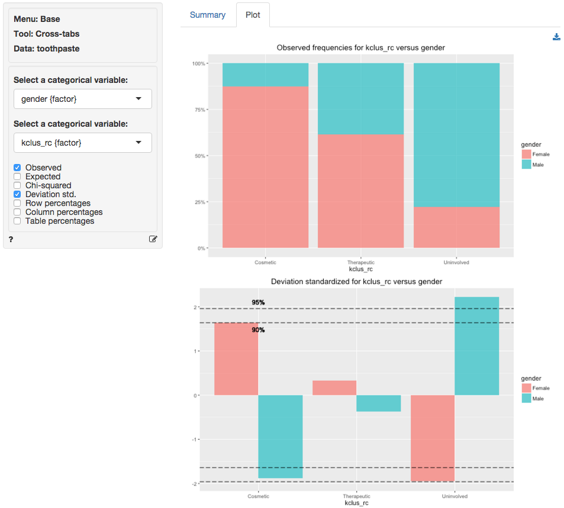

Cluster > K-means
Create segments using K-means clustering
The goal of Cluster Analysis is to group respondents (e.g, consumers) into segments based on needs, benefits, and/or behaviors. The tool tries to achieve this goal by looking for respondents that are similar, putting them together in a cluster or segment, and separating them from other, dissimilar, respondents. The researcher compares the segments and provides a descriptive label for each (i.e., a name).
Example: Toothpaste
Click the examples radio button on the Data > Manage page and click Load examples then choose the toothpaste data from the Datasets dropdown. The data set contains information from 60 consumers who were asked to respond to six questions about their attitudes towards toothpaste. The scores shown for variables v1-v6 indicate the level of agreement with these statements on a 7-point scale where 1 = strongly disagree and 7 = strongly agree.
After we determined the appropriate number of clusters to extract using Hierarchical cluster analysis we use K-means to create the final segments. The main advantage of this algorithm is it’s flexibility and robustness in finding the most appropriate grouping of respondents. For marketing and business data we often use Hierarchical cluster analysis to select the number of segments and K-means cluster analysis to create the final segments.
To apply K-means to the toothpaste data select variables v1 through v6 in the Variables box and select 3 as the number of clusters. In the Summary tab we use the Cluster means table to describe the individuals assigned to a segment. Each number in the table shows the average score for people in that segment for a variable. For example, segment 3 has an average score of 5.75 out of 7 on question v2. We are looking for either very high or very low mean values to help distinguish segments because we want to establish how one segment differs from the other segments. If there are no substantial differences in the mean value of a variable across different segments that variable is not valuable for interpretation. By highlighting the variables that most clearly distinguish the different segments we can generate a name or label for the segment that describes who they are and where the segments differ from one another.

It can be useful to visualize how well the segments are separated by plotting the data for each segment and variable. The figures shown are density plots. For variable v1 the clusters are nicely separated. The average response to the question ‘It is important to buy a toothpaste that prevents cavities’ for segment 2 (green) seems lower than for both segment 3 (blue) and segment 1 (pink). Segment 1, in turn stands out with a higher score on this question compared to the other two segments. For question v4 we see a different pattern. The average response to the question ‘I prefer a toothpaste that freshens breath’ for segments 1 (green) and 2 (pink) is very similar and the plots overlap. Segment 3 (blue), in turn, stands with a higher score on this question compared to the other two segments.

By reviewing the Cluster means table in the Summary tab and the density plots in the Plots tab we can derive the following labels: Segment 3 stands out with higher scores on questions v2, v4, and v6. We could call them the ‘Cosmetic brushers’. Segment 1 stands out with higher scores on questions v1 and v3 and a lower score on v5. They seem to care most about the health benefits of toothpaste so we might call them the ‘Therapeutic brushers’. Segment 2 scores lower in v1 and v3 and higher on v5, i.e., they seem to care little about the health benefits of toothpaste. Since their scores for the cosmetics benefits are not high either but rather middle-of-the-road we could label them the ‘Uninvolved brushers’.
Once we categorize the segments we can create a segment (or cluster) membership variable by clicking the ‘Membership’ button. A new variable is added to the toothpaste data showing which respondents were assigned to each cluster (i.e., cluster membership). We can change the created cluster variable to show the descriptive labels above through the Data > Transform menu. Select the kclus3 variable in the Select column(s) box. Then from the Transform type dropdown select Recode. In the recode box type (or paste) the command below to recode and press return:
1 = 'Therapeutic'; 2 = 'Uninvolved'; 3 = 'Cosmetic'This should produce the output below. After verifying the results are as expected, click the Save changes button to add the recode variable to the Toothpaste dataset.

We can profile these segments with demographic data using cross-tabs (e.g., gender vs segment membership). Go to Base > Cross-tabs. Our null hypothesis and alternative hypotheses are:
H0: There is no relationship between gender and segment membership
Ha: There is a relationship between gender and segment membershipIn the summary tab we see there is a significant association between these two variables. The p-value is smaller than .001 and there are no cells with expected values below 5.

For a more detailed view of the association we go to the Plot tab. Select the ‘Deviation (standardized)’ plot. The ‘Uninvolved’ segment has more men than we would expect under the null of no-association. We might also argue that their are more women in the ‘Cosmetics’ than we would expect under the null of no-association, although the significance level is marginal. In sum, in these data men seem more likely to belong to the ‘Uninvolved brushers’ segment and women seem (slightly) more likely to be in the ‘Cosmetic brushers’ segment.
